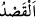
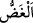
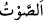

“Yürüyüşünde tabiî ol”
“
” ifrat ve tefritin zıddıdır. Yâni böbürlenmekten sakınarak yürüyüşünde îtidalli
ol. Gidiş ve davranışlarında orta yolu tut. Yürüyüşünde orta yolu tut; ne çok ağır ne de
çok hızlı git. İbâdet ve riyazatlarının çokluğunu göstermek için, sanki ölüymüş gibi
yürüyüşlerinde zayıflık ızhar eden sahte zâhidler gibi yürüme. Onlar gayretleri boşa
giden gösteriş sâhibi kimselerdir. Yine sen şımarık ahlaksız kişilerin hoplayıp
zıplayarak yürüdüğü gibi yürüme. Sana gereken sekînet ve vakardır.
Bir hadîste: “Hızlı yürümek, mü’minin heybetini giderir.”[90] buyrulmuştur.
Hz. Âişe (r.anhâ)’nın, Hz. Ömer (r.a.) hakkında söylediği “Yürüdüğü zaman hızlı
yürürdü” sözünden maksad “Ölmekte olanlar gibi debelenmez, daha hızlı yürürdü”
demektir.
Bazıları şöyle demiştir: Şeytanın Âdem oğluna verdiği iki vesvese vardır. Bunlardan
hangisini başarırsa mutlu olur. Bunlar ifrat ve tefrit olup, bu iki hâlin tasavvur
edilebileceği her iş için geçerlidir.
“Sesini alçalt”
“
” hem sesi kısmak, hem de gözü kapamak mânâlarını ifâde etmek için kullanılır.
el-Müfredât’ta der ki: “
” bakışı ve sesi noksanlaştırmak demektir.”
“
” iki cismin çarpışması sırasında ortaya çıkan sıkışmış havadır. Bazıları şöyle
der: İnsanın içinden tabiî olarak çıkan havaya “nefes” denilir. İradeyle çıkıp iki cismin
çarpışması sebebiyle kendisine dalgalanma ârız olana ise “ses” denir. Eğer sese bilinen
sebeplerle özel keyfiyetler eklenirse “harfler” diye isimlendirilir.
Mânâ şöyledir: Sesini kıs; hitap ederken, konuşurken, özellikle iyiliği emredip
kötülükten sakındırırken, duâ ve münacât esnâsında sesini alçalt. Yâni bağırıp çığıran,
nârâ atan, uzun dilli ve sert konuşan olma. Ancak düşmanı ve benzeri şeyleri korkutmak
için sesi yükseltmek istisnâ edilmiştir.
İncil’de Allah Teâlâ Meryem oğlu Îsâ’ya şöyle tavsiye etmiştir: “Kullarıma, bana duâ
ettiklerinde seslerini alçaltmalarını emret. Çünkü ben onların kalplerinde olanı bile
işitiyor ve biliyorum.”
Muhammed b. Talha el-Ikdü’l-ferîd’de şöyle der: “Hikmet ehli kimseler,
dinleyenlere daha çok heybet vermesi ve kalplerine daha çok tesir etmesi için sultanın
konuşurken sesini yükseltmesini tercih ettiler.”
el-Hülâsa’da denilir ki: “İmam, namazda insanların ihtiyacından fazla sesini
yükseltmez; aksi halde yanlış davranmış (isâet) olur. Nitekim el-Keşf isimli eserde de
böyle geçmektedir. Kerâhet ile isâet arasında fark, kerâhetin isâetten daha büyük bir
hata olmasıdır.
İnsânü’l-uyûn’da der ki: “Müezzinlerin, imama uyan öndekilerin uzağında
bulunanlara tekbiri ulaştırmak için seslerini yükseltmelerinde beis yoktur. Çünkü bunda
cemâat için fayda vardır. Şâyet onlara imamın sesi ulaşırsa durum farklı olur. O
takdirde müezzinlerin tekbir alması dört mezhep imamının ittifakıyla bid‘attır,